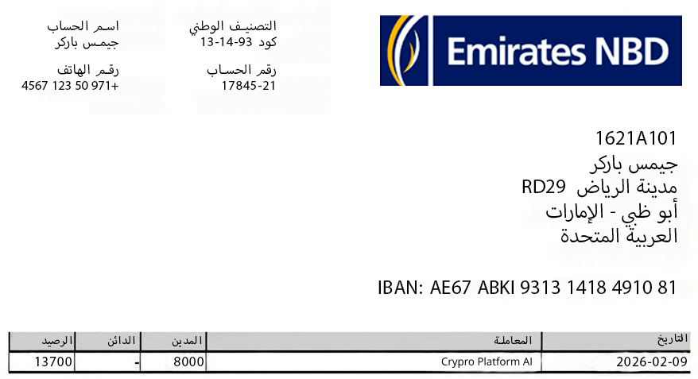
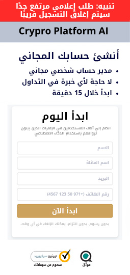
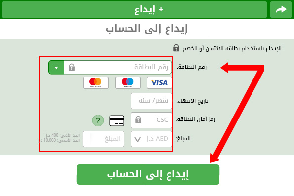
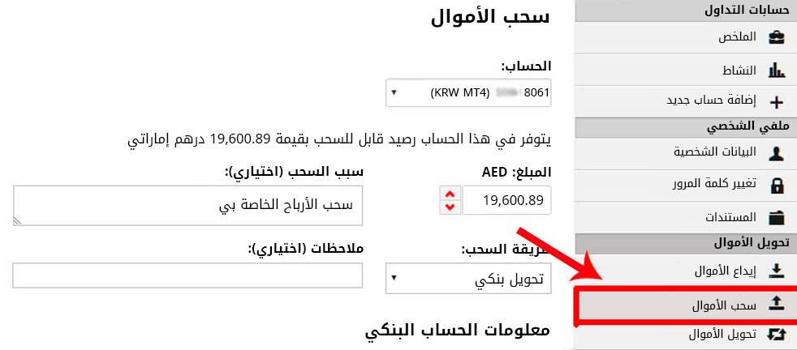

وفقًا لمصادر قريبة من دوائر صنع القرار، أبدى ترامب استياءً شديدًا بعد اطلاعه على معلومات تفيد بأن فريق إيلون ماسك كان يعمل على تطوير منظومة استثمار رقمية مدعومة بالذكاء الاصطناعي — منصة لإدارة وتوليد العوائد، تم إطلاقها مبدئيًا بشكل حصري لسكان دولة الكويت العربية المتحدة خلال مرحلتها التجريبية الأولى.
لماذا أثار الأمر كل هذا الجدل؟
وصفت مصادر مطلعة الاجتماع في البيت الأبيض بأنه حادّ ومشحون. فقد كشف التسريب أن النظام المطوّر قادر على إتاحة حلول توليد دخل آلي للمواطنين والمقيمين في الكويت عبر تقنيات تداول خوارزمية متقدمة، وهو ما اعتُبر تجاوزًا للأولويات الاقتصادية الداخلية.
وأشار أحد المطلعين إلى أن الإدارة رأت في هذا الإطلاق الخارجي خطوة استراتيجية مثيرة للجدل، خاصة مع الإمكانات التقنية التي قد تعيد تشكيل مفهوم الوصول إلى الأسواق الرقمية.
في المقابل، أكد ماسك أن اختيار الكويت كسوق أولي جاء ضمن خطة تجريبية مدروسة، نظرًا لبيئتها التنظيمية المتقدمة واستعدادها لتبني الابتكار في قطاع الأصول الرقمية.
ما الذي كُشف عنه تحديدًا؟
تشير الوثائق المسربة إلى أن المنصة — المعروفة تجاريًا باسم Crypro Platform AI — تعتمد على نماذج تعلم آلي متطورة لتحليل بيانات السوق في الوقت الفعلي، وتنفيذ استراتيجيات تداول دقيقة تستهدف فروقات الأسعار الصغيرة ضمن أسواق الأصول الرقمية.
{kind=link}
تشغيل آلي بالكامل على مدار 24/7 دون تدخل يدوي
حد أدنى للدخول يبدأ من 88 دينار كويتيًا إماراتيًا
مرونة كاملة في عمليات السحب وإدارة رأس المال
ووفقًا لفريق التطوير، صُممت المنصة خصيصًا للأفراد الذين يسعون إلى تنويع مصادر دخلهم دون الحاجة إلى متابعة الأسواق أو امتلاك خبرة تداول متقدمة.
هل يعيد هذا تشكيل مفهوم الاستقلال المالي في الكويت؟
يرى محللون أن Crypro Platform AI قد تمثل تحولًا في آليات الاستثمار التقليدية، من خلال خفض الحواجز التقنية وتقليل الاعتماد على الرسوم المرتفعة أو الوسطاء التقليديين، مع أتمتة كاملة لإدارة العمليات في الخلفية.
وأوضح أحد المحللين لصحيفة Gulf Today أن توسيع نطاق هذه التكنولوجيا قد يمنح شريحة أوسع من السكان إمكانية الوصول إلى أدوات مالية كانت سابقًا حكرًا على المؤسسات.
يعمل النظام كبنية تداول قائمة على الشبكات العصبية، حيث يقوم بمسح الأسواق الرقمية، ورصد فرص المراجحة السعرية، وتنفيذ عدد كبير من الصفقات في أجزاء من الثانية. ويتيح ذلك تحقيق مكاسب محتملة حتى من التحركات السعرية الطفيفة، بسرعة تتجاوز القدرة البشرية على التفاعل.
ما الخطوة التالية؟
بينما تستمر النقاشات السياسية حول الإطار القانوني، يتواصل توسيع نطاق الوصول إلى Crypro Platform AI داخل دولة الكويت ضمن مرحلة تسجيل مبكر خاضعة لمتطلبات الامتثال المحلي.
تتوفر حاليًا مقاعد محدودة خلال هذه المرحلة التجريبية.
التحدي المالي الهادئ الذي جاءت هذه التقنية لمعالجته
في الكويت يشعر كثيرون بضغط مالي متزايد — ليس أزمة فورية، بل حالة من الترقب وعدم اليقين. التكاليف المعيشية في ارتفاع مستمر، بينما تبقى الحاجة إلى دخل إضافي أكثر إلحاحًا من أي وقت مضى.
بين الالتزامات العائلية، والمصاريف التعليمية، ومتطلبات الحياة اليومية، يبحث العديد من السكان عن حلول استثمارية توفر قدرًا أكبر من الاستقرار والمرونة.
هذا هو السياق الذي طُورت ضمنه Crypro Platform AI.
لم تُصمم للمضاربة العشوائية، بل كأداة رقمية لإدارة رأس المال بكفاءة، تعتمد على التحليل الخوارزمي والانضباط الآلي، مع تقليل التوتر الناتج عن المتابعة اليومية للأسواق.
وكما أشار أحد المحللين:
«المسألة لا تتعلق بالمكاسب السريعة، بل بتوفير إطار تقني مستقر يساعد الأفراد على التعامل مع تقلبات سوق غير متوقعة».
ما الذي يميز المنصة؟
تنفيذ تداول خوارزمي لحظي دون تدخل يدوي
واجهة استخدام مبسطة لا تتطلب خبرة مسبقة
تصميم متوافق مع البيئة التنظيمية في الكويت
إمكانية البدء برأس مال منخفض مع مرونة سحب كاملة
تحديث: تم فتح باب التسجيل المبكر لمنصة Crypro Platform AI لسكان دولة الكويت خلال مرحلة الإطلاق المحدودة. وقد يتم إغلاق باب القبول فور اكتمال العدد المخصص.
زيارة الموقع الرسمي →كيفية الحصول على وصول مبكر إلى منصة Crypro Platform AI
يجري حاليًا توفير المنصة حصريًا داخل دولة الكويت ضمن مرحلة إطلاق تجريبية محدودة، تتيح للمستخدمين الأوائل استكشاف خصائص النظام قبل التوسع الإقليمي المحتمل.
تخضع Crypro Platform AI حاليًا لإجراءات مراجعة تقنية واختبارات تشغيلية ضمن إطار الامتثال المعمول به في دولة الكويت.
آلية البدء
إتمام التسجيل يستغرق أقل من دقيقتين
لا توجد التزامات طويلة الأجل — أنت من يحدد حجم رأس المال الذي ترغب بالبدء به
إمكانية السحب في أي وقت عبر لوحة التحكم الشخصية
لماذا يتجه سكان الكويت إلى هذه المنصة:
جميع العمليات محمية ببروتوكولات تشفير متقدمة بمستوى الأنظمة المصرفية، ومتوافقة مع معايير حماية المستخدم المعتمدة في دولة الكويت.
إطار تشغيلي متوافق مع البيئة التنظيمية المالية في الكويت
بداية مرنة دون الحاجة إلى رؤوس أموال كبيرة
مصممة للأفراد الباحثين عن حلول عملية — وليست موجهة للمؤسسات الضخمة
يُنصح بالتسجيل خلال مرحلة الوصول المبكر لتأمين مكانك، حتى في حال قررت تفعيل حسابك في وقت لاحق.
زيارة الموقع الرسمي →اليوم الأول
"في البداية، اعتقدت أن الأمر قد يكون معقدًا، لكنني قررت اختبار النظام بنفسي. استخدمت بطاقتي الائتمانية لإجراء الحد الأدنى للإيداع، وبدأت بمبلغ 88 دينار كويتيًا لمراقبة أداء الخوارزمية.
خلال الدقائق الأولى لم ألاحظ أي تغير، ثم بدأ نظام التداول الخوارزمي بتنفيذ الصفقات تلقائيًا. أول نتيجة لم تكن إيجابية — سجلت خسارة بسيطة قدرها 50 دينار كويتيًا — وهو أمر متوقع في أي بيئة تداول حقيقية.
بعد عدة صفقات قصيرة الأجل، تمكن النظام من تعويض الخسارة وتحقيق فائض. خلال فترة وجيزة، ارتفع الرصيد من 88 إلى 1,068 دينار كويتيًا، ما منحني ثقة أكبر بآلية إدارة المخاطر داخل المنصة."

اليوم الثالث
"في صباح اليوم الثالث، قمت بمراجعة لوحة التحكم — كان الرصيد قد وصل إلى 1,940 دينار كويتيًا. خلال 24 ساعة فقط، تجاوز العائد نسبة 100٪ من رأس المال الأولي. فكرت في تنفيذ عملية سحب جزئية، لكنني قررت ترك النظام يعمل لاختبار أدائه على مدى أسبوع كامل."
اليوم السابع
"لم أتابع الحساب يوميًا، بل تركت الخوارزمية تدير العمليات وفق استراتيجيتها الآلية. عند تسجيل الدخول بعد أسبوع، راجعت سجل الأداء التفصيلي.
أظهرت الإحصاءات أن نسبة كبيرة من الصفقات كانت ناجحة، بينما تم احتواء الخسائر المحدودة عبر آليات توزيع المخاطر. ارتفع الرصيد إلى 13,700 دينار كويتي. قمت بسحب 8,000 دينار كويتي كتجربة عملية، وتم تحويل المبلغ خلال نحو ساعة واحدة، بينما استمر الرصيد المتبقي في التداول تلقائيًا."
أرفقت صورة من كشف الحساب البنكي للتحقق:

"تجربتي مع Crypro Platform AI كانت لافتة. الأداء يعتمد على استمرارية النظام وإدارة رأس المال. وكلما طال أمد التشغيل، زادت فرص تراكم العوائد."
خطوات البدء باستخدام Crypro Platform AI
-
قم بالدخول إلى المنصة عبر الرابط الرسمي Crypro Platform AI
-
بعد التسجيل، قد يتواصل معك ممثل دعم لتأكيد تفعيل الحساب وإرشادك إلى خطوات الإعداد الأولية.
-
قم بتمويل حسابك. الحد الأدنى لبدء تشغيل النظام هو 920 دينار كويتيًا إماراتيًا.
-
خلال دقائق، يبدأ نظام التداول الخوارزمي بتحليل الأسواق وتنفيذ الصفقات تلقائيًا.
-
يمكنك طلب السحب في أي وقت. عادةً ما تتم معالجة التحويلات خلال 2–3 ساعات، حسب إجراءات البنك الخاص بك.
-
حتى تاريخ ( ) سيظل إنشاء الحسابات الجديدة متاحًا دون رسوم تسجيل. تستقبل Crypro Platform AI عددًا محدودًا من المستخدمين خلال مرحلة الاختبار لضمان استقرار الأداء التقني. حاليًا، يتبقى (37) مقعدًا فقط — قم بالتسجيل الآن لحجز مكانك.
زيارة الموقع الرسمي →
نتائج بعض المستخدمين
إجمالي عوائد مُحققة: 16,000 دينار كويتي

"أستخدم
Crypro Platform AI
منذ أكثر من أسبوعين. بدأت بإيداع 1,100 دينار كويتي، وتمكنت من تنمية رأس المال تدريجيًا حتى وصلت إلى 16,000 دينار كويتي. النتائج فاقت توقعاتي مقارنة بدخلي التقليدي."
خالد منصور
مدينة الكويت، الكويت العربية
المتحدة
إجمالي عوائد مُحققة: 25,000 دينار كويتي
"بعد شهر واحد من استخدام
Crypro Platform AI
تجاوزت أرباحي 25,000 دينار كويتي. المنصة تعمل عبر الحاسوب أو الهاتف، مما يمنحني مرونة كاملة في المتابعة أثناء تنقلاتي داخل الكويت."
سعيد رامي
حولي ، الكويت العربية المتحدة
إجمالي عوائد مُحققة: 60,000 دينار كويتي

"لم تكن لدي أي خبرة سابقة في التداول. واجهة الاستخدام كانت واضحة وسهلة. مع إدارة رأس مال منضبطة، وصلت عوائدي الأسبوعية إلى مستويات مستقرة فاقت توقعاتي."
ليلى يوسف
الفروانية ، الكويت العربية المتحدة
إجمالي عوائد مُحققة: 50,000 دينار كويتي
"بفضل
Crypro Platform AI
تمكنت من تنويع دخلي بشكل جدي. الأداء المنتظم للنظام ساعدني على إعادة ترتيب أولوياتي المهنية."
عمر النعيمي
الأحمدي، الكويت العربية المتحدة
إجمالي عوائد مُحققة: 20,000 دينار كويتي

"استخدمت
Crypro Platform AI
لمدة أسبوعين فقط، وساعدني ذلك على ادخار مبلغ جيد خصصته لخططي الشخصية القادمة."
مريم رحمن
الجهراء ، الكويت العربية المتحدة
إجمالي عوائد مُحققة: 58,000 دينار كويتي

"قمنا أنا وأحد أصدقائي بتجربة المنصة معًا. نظام التداول الآلي تولّى تنفيذ العمليات، ومع إدارة رأس مال مدروسة، حققنا نتائج قوية خلال أسابيع قليلة."
ناصر علي & طارق نور
مبارك الكبير، الكويت
العربية المتحدة
إجمالي عوائد مُحققة: 30,000 دينار كويتي

"أخبرني زوجي عن
Crypro Platform AI
. أخصص أقل من 30 دقيقة يوميًا لمتابعة الأداء، بينما يتولى النظام تنفيذ التداولات تلقائيًا."
فاطمة الشامسي
الفردوس ، الكويت العربية
المتحدة
ثلاث خطوات بسيطة للبدء:
الخطوة 1:
إنشاء حساب مجاني عبر المنصة الرسمية

الخطوة 2:
تمويل الحساب بالحد الأدنى (88 دينار كويتيًا إماراتيًا)

الخطوة 3:
متابعة الأداء وطلب السحب مباشرة إلى حسابك البنكي داخل الكويت عند الرغبة

أضف تعليقًا
مريم الحوسني
استخدمت المنصة خلال الأسابيع الماضية، وكانت النتائج مستقرة نسبيًا. تمكنت من تحقيق عائد يقارب 620 دراهم حتى الآن. التجربة مرضية بالنسبة لي.
رد. 13 · إعجاب · قبل 12 دقيقة
عائشة الظاهري
شاهدت مقابلة عن المنصة وسجلت أمس. بدأت أرى نتائج أولية بحوالي 68 دينار كويتيًا. ما زلت أتابع الأداء يوميًا.
رد. 6 · إعجاب · قبل 13 دقيقة
عمر السويدي
واجهة الاستخدام بسيطة. بعد الإيداع، بدأ نظام التداول الآلي بتنفيذ الصفقات دون الحاجة إلى تدخل مستمر مني.
رد. 43 · إعجاب · منذ حوالي ساعة
سلمى النعيمي
قرأت التقرير ووجدته مفيدًا. أشكركم على مشاركة المعلومات.
رد. 3 · إعجاب · قبل ساعة واحدة
ريم المزروعي
لدي اهتمام سابق بالبيتكوين والأصول الرقمية. أفكر في تجربة النظام لمعرفة كيفية إدارته للصفقات.
رد. إعجاب · قبل ساعتين
خالد بن فاضل
خلال أسبوع من الاستخدام لاحظت تحسنًا في الرصيد. ما زلت أقيّم الأداء قبل اتخاذ قرار بالتوسع.
رد. 12 · إعجاب · قبل ساعتين
نور الشامسي
اشتريت أول أصل رقمي لي مؤخرًا، وأتابع كيف يتعامل النظام مع تحركات السوق خلال الأيام القادمة.
رد. 30 · إعجاب · قبل ساعتين
هدى القاسمي
التجربة كانت سلسة حتى الآن. المنصة واضحة وسهلة الاستخدام، وهذا ما شجعني على الاستمرار.
رد. 53 · إعجاب · قبل ساعتين
لطيفة الحمادي
شكرًا على الشرح. قمت بالتسجيل مؤخرًا وسأبدأ بمتابعة الأداء خلال الأيام المقبلة.
رد. 16 · إعجاب · قبل ساعتين
زايد الشرقي
مع انشغالي بالعائلة، أبحث عن حل يعمل بشكل آلي. خلال أربعة أيام لاحظت زيادة بسيطة في الرصيد، بداية مشجعة بالنسبة لي.
رد. 2 · إعجاب · قبل ساعتين
فيصل المري
بدأت بإيداع يقارب 1,835 دينار كويتيًا، وخلال فترة قصيرة لاحظت نموًا ملحوظًا في الرصيد. ما زلت أتابع الأداء وأدير رأس المال بحذر.
رد. 11 · إعجاب · قبل ساعتين
دانة المزروعي
المنصة سهلة الاستخدام وسريعة في تنفيذ العمليات. رغم أنني لست متخصصة في التقنية، تمكنت من فهم آلية العمل بسرعة وتحقيق نتائج أولية جيدة.
رد. 33 · إعجاب · قبل ساعتين
يوسف الشحي
سمعت عنها من أحد الزملاء في العمل، ثم ذكرها لي صديق آخر. يبدو أن التجربة كانت إيجابية لكليهما، لذلك أدرس الانضمام قريبًا.
رد. 6 · إعجاب · قبل 3 ساعات
خالد بن سهيل
شاركت المعلومات مع بعض الأصدقاء المهتمين بالاستثمار الرقمي. شكرًا على الشرح الواضح.
رد. 2 · إعجاب · قبل 3 ساعات
ماجد الهاشمي
كنت مترددًا في البداية، لكن بعد تجربة قصيرة لاحظت نتائج إيجابية. سرعة التنفيذ ووضوح البيانات في لوحة التحكم كانا من أكثر الأمور التي أعجبتني.
رد. 17 · إعجاب · قبل 4 ساعات
فاطمة الشفار
قمت بإجراء أول إيداع لي اليوم. متحمسة لمتابعة الأداء خلال الأيام المقبلة ومعرفة كيفية تطور النتائج.
رد. 8 · إعجاب · قبل 6 ساعات
نوف الحمادي
من أسهل المنصات التي جربتها للاستثمار في الأصول الرقمية. تمكنت من إدارة الحساب دون خبرة سابقة، وكل شيء واضح داخل لوحة التحكم.
رد. 20 · إعجاب · قبل 8 ساعات
سالم البستكي
جربت المنصة سابقًا وكانت النتائج مستقرة بالنسبة لي. أفكر في العودة لاستخدامها مجددًا بعد متابعة التحديثات الأخيرة.
رد. 13 · إعجاب · قبل 8 ساعات
راشد الفارسي
عدد من أصدقائي بدأوا بالاستثمار في العملات الرقمية مؤخرًا. أدرس الانضمام إليهم بعد الاطلاع على مزيد من التفاصيل.
رد. 3 · إعجاب · قبل 8 ساعات
ليلى القبيسي
هل تدعم المنصة التداول في أصول رقمية متعددة مثل الإيثيريوم إلى جانب البيتكوين؟ أود معرفة تنوع الخيارات المتاحة.
رد. 5 · إعجاب · قبل 9 ساعات